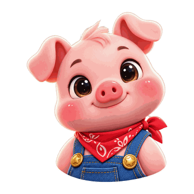

🪟
📌
—
✕

딱세판만
커피 걸고 딱 세 판 · 설치 없이 링크 하나로
🔗 친구와 하기
🔑 방 코드
참가
어느 게임으로 할까?
고르면 방이 열려. 링크를 친구에게 보내면 끝.
13가지
온라인 가능
🎲
내 기록
💰 내 코인
0
상점 →
💰
판을 이기면
코인
이 쌓여요 · 상점에서 마스코트로 바꿀 수 있어요
🎲
이름 정하기
이름 · 온라인에서 쓸 이름
아바타
📊 게임별 전적
테마
☀️
✨ 광고 제거 · 프리미엄
✨ 프리미엄 · 광고 없음
광고
여기에 광고가 표시됩니다
🎲 게임 설명 보기
13
🎲 주사위 게임
4
🦴
너클본즈
3×3 격자에 주사위를 쌓아 곱점을 노리고, 상대의 같은 칸은 부순다.
⚡ 1분 안팎
2인
AI
온라인
🎲🎲
요트 다이스
상단 보너스·콤보·온라인 멀티까지. 친구들과 방 잡고 점수 대결.
🕐 2~3분
2~6인
AI
온라인
🫥 위장 모드
🤥
라이어 다이스
컵 속 주사위를 숨기고 뻥카를 친다. 1은 만능, 거짓말을 잡아라.
⚡ 1~2분
2~4인
AI
온라인
블러핑
🔀
LCR (좌·중·우)
칩을 옆으로 넘기는 순수 운빨 파티 게임. 마지막 한 명이 팟까지 싹쓸이.
⚡ 1분 안팎
3~6인
AI
온라인
운빨
🪀 전통·보드
2
🐎
윷놀이
도·개·걸·윷·모! 지름길로 질러가고 상대 말을 잡으며 내 말을 모두 완주시켜라. 정통 규칙.
🕐 3~4분
2~6인
AI
온라인
정통 규칙
⚫🔴
알까기
손끝으로 튕겨 상대 돌을 판 밖으로. 조준·파워·낙사 — 물리 대전.
⚡ 1분 이내
1대1
AI
온라인
🆕
🎴 화투 게임
1
🎴
섯다
화투 2장으로 족보 승부. 광땡·땡·끗을 쪼아보고 베팅해 판돈을 따라. (가상 칩)
🕐 4~5분
2~5인
AI
온라인
🆕
🃏 카드 게임
6
♠️
블랙잭
딜러보다 21에 가깝게! 히트·스탠드·더블로 승부하는 카드 오락. (가상 칩)
🔁 라운드제
vs 하우스
🆕
🎰
바카라
플레이어·뱅커·타이에 베팅! 9에 가까운 쪽이 승. 카지노 정통 룰. (가상 칩)
🔁 라운드제
vs 하우스
🆕
🎭
인디언 포커
내 카드만 못 봐! 남의 패를 읽고 베팅하는 심리전. 높은 숫자가 팟을 먹는다.
🕐 2~3분
2~4인
AI
온라인
🆕
🔄
원카드
같은 무늬·숫자를 내며 손패 먼저 털기! 공격·스킵·방향전환 특수카드로 뒤집는 우노류.
⚡ 1분 안팎
2~4인
AI
온라인
🆕
🔺
하이로우
다음 카드가 높을지 낮을지! 연속 정답으로 팟을 불리고 원할 때 챙기는 배팅 오락.
🔁 라운드제
혼자
🆕
🃏
도둑잡기
짝을 맞춰 버리고, 마지막까지 조커를 든 사람이 술래! 온 가족 카드 게임.
⚡ 1~2분
3~4인
AI
온라인
🆕
딱세판만 · 커피 걸고 딱 세 판 🎲
개인정보 처리방침
🏅
도전과제 달성!
🎲
홈 화면에 추가
앱처럼 전체화면으로 바로 열기
설치
✕